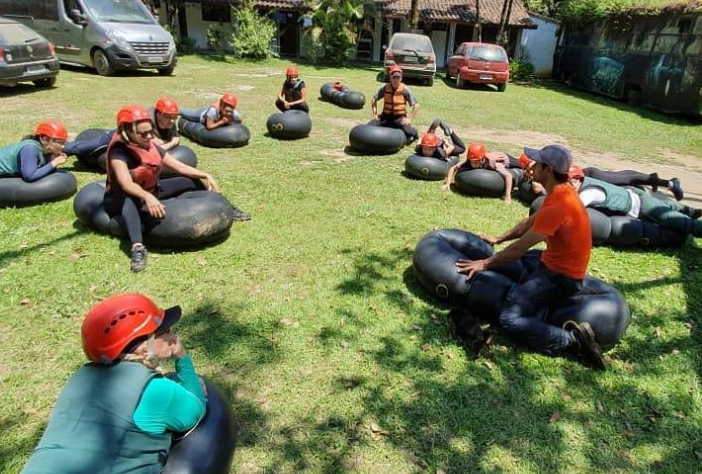
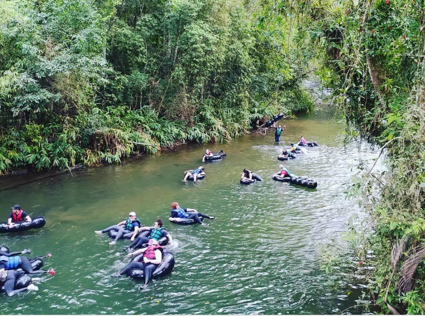
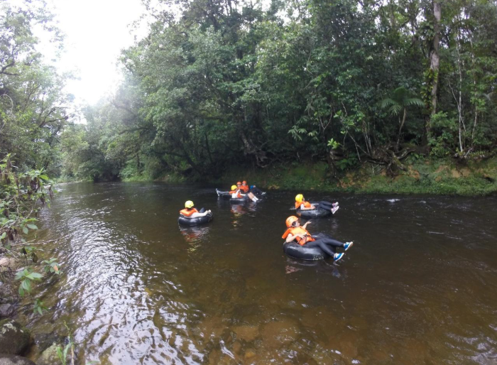

Detalhes do Roteiro
A descida é individual e realizada com grupos a partir de 2 (duas) pessoas com idade mínima de 8(oito) anos. O Bóia Cross tem percurso aproximado de 3 km e duração operacional de 2:30hrs com parada em alguns pontos para banho e mergulho. Passando por corredeiras e cachoeiras de dificuldades I a III, a descida é realizada com instrutores que acompanham os participantes durante a descida, que garantem a segurança dos praticantes. Os equipamentos de segurança fornecidos pela Paraná Ecoturismo são: Colete salva-vidas, Capacete, Boia, Seguro Aventura, fotos e jaquetas caso esteja frio. Todo o transporte operacional é realizado pela Paraná Ecoturismo.
Usar
Usar: Roupas leves, flexíveis e apropriadas para uso úmido, sapatos fechados.
Levar
Muda de roupa para trocar no final da atividade, protetor solar com sol intenso.
Galeria de Fotos


